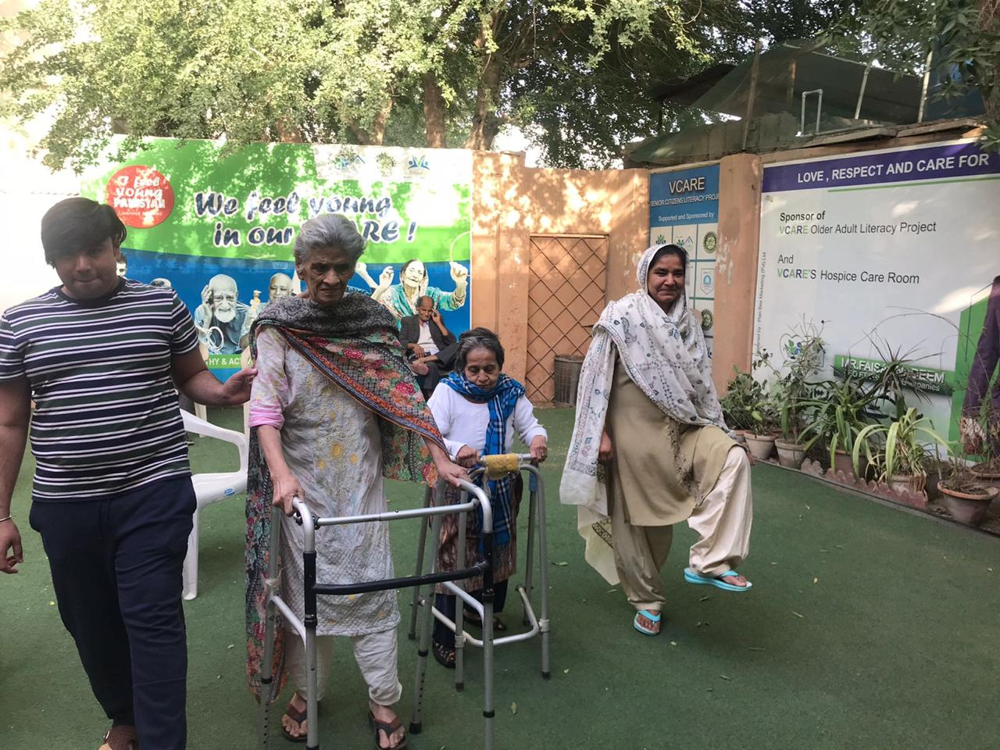
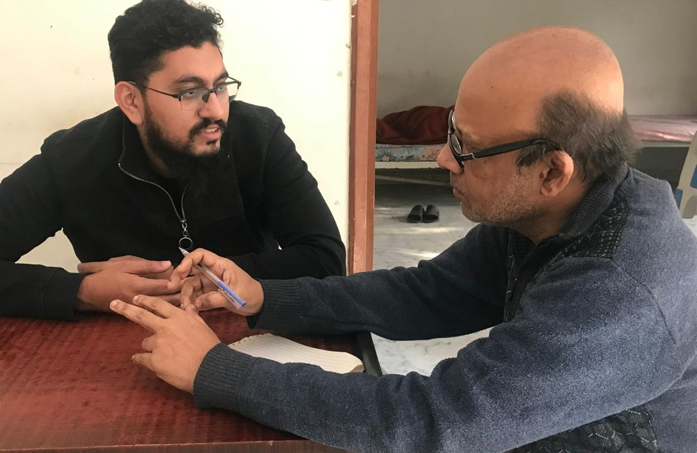
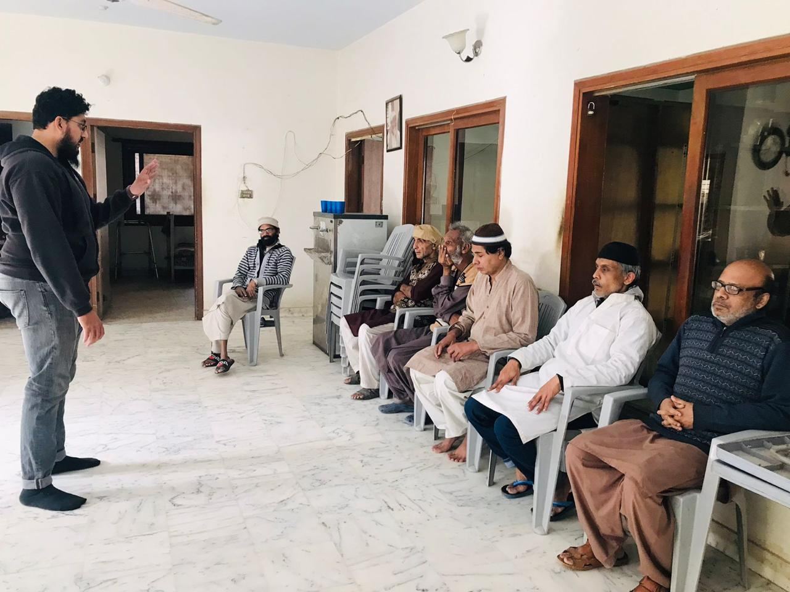
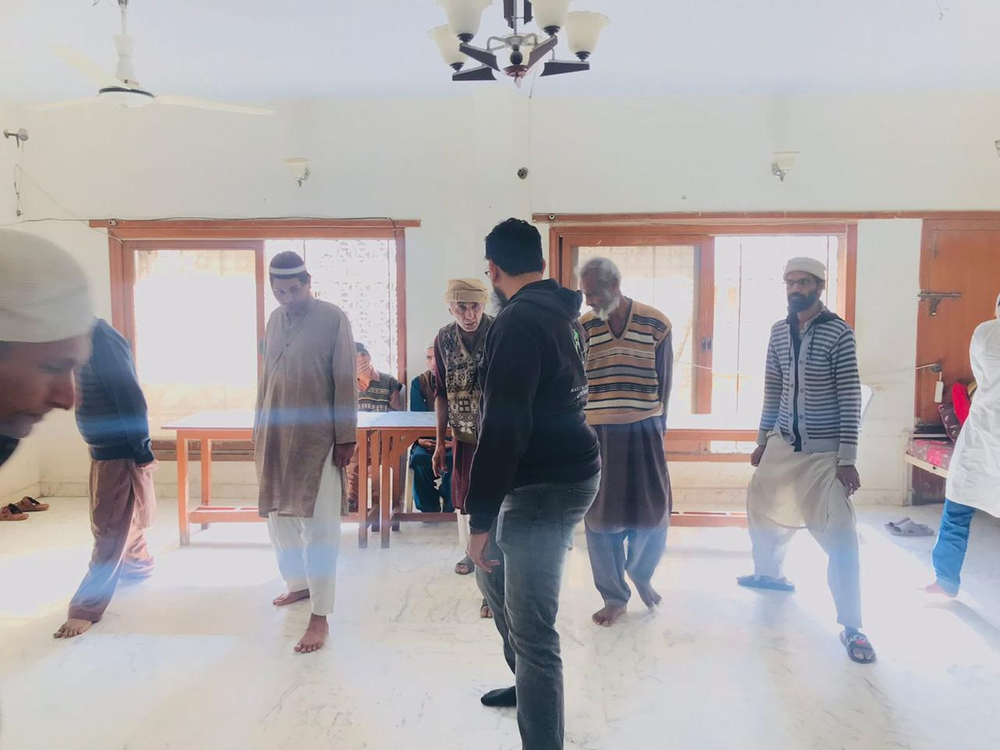
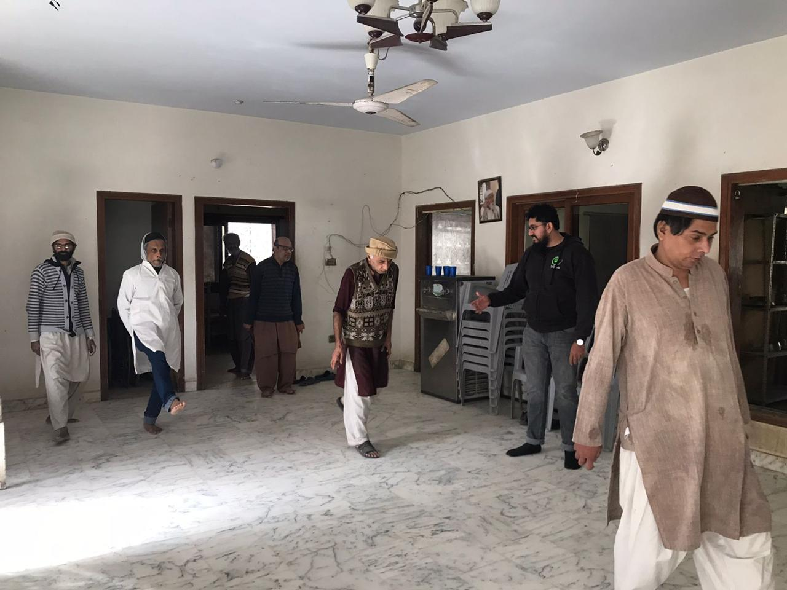
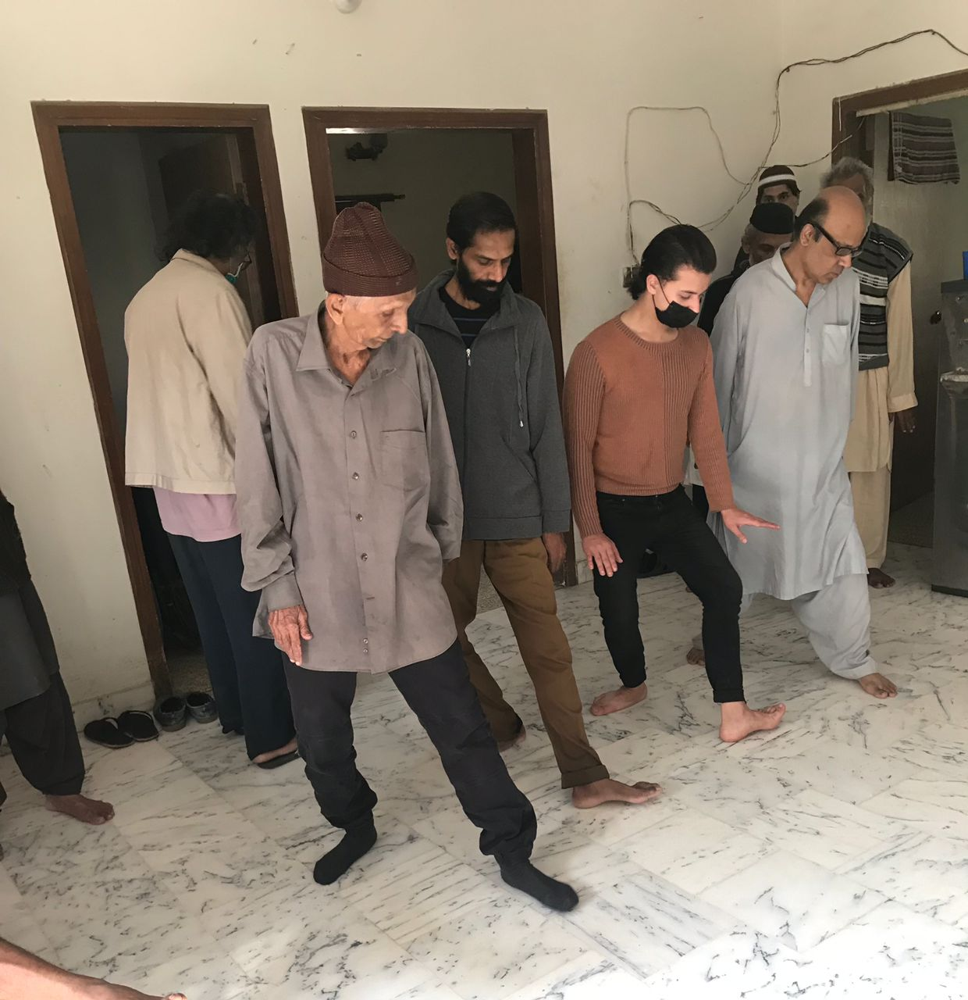

The Aga Khan UniversityGeriatrics • Community Health • Mixed-Methods Research
OLDER ADULT HEALTH • FALL PREVENTION • BALANCE & GAIT
Fall Prevention & Management Program in Karachi, Pakistan
A mixed-method research and intervention project involving community-dwelling older people in Karachi.
The project examined perceptions of falls and fall management while evaluating a 12-week balance,
gait, and Tai Chi–based program using quantitative assessments and qualitative interviews.
AKU University Research Council — Intramural FundingThe original research proposal was submitted under Aga Khan University Research Council intramural funding.
Project overview
The study was designed to understand how older adults and caregivers perceive falls, fall-related injuries,
prevention, and community-level management. It also evaluated whether a structured exercise program could
improve gait, balance, cognition, mood, confidence, and functional independence.
SettingCommunity/respite-centre settings in Karachi
Sites documentedVCARE, Sunrise, and Florida Old Age Home
Intervention12-week Balance and Gait Strengthening / Tai Chi–based program
Quantitative toolsTimed Up and Go (TUG), Mini-Cog, and depression score
Qualitative componentIn-depth interviews with older adults and caregivers
DesignPre/post intervention supported by qualitative inquiry
My contribution
Research team support
Participated as a project intern within the research team supporting the fall-prevention study and intervention activities.
Data collection
Supported collection of mixed-method study data, including participant assessments and qualitative research activities.
Analysis & interpretation
Contributed to analysis and interpretation of quantitative and qualitative findings across the intervention period.
Reporting & documentation
Supported project reporting, research documentation, presentation preparation, and synthesis of study findings.
Methods and assessments
Timed Up and Go (TUG)
Used to assess mobility, gait, and balance by timing a participant standing from a chair, walking, turning, returning, and sitting.
Mini-Cog
A brief cognitive screening tool used alongside the intervention to observe changes in cognitive performance over time.
Qualitative interviews
In-depth interviews explored participants’ and caregivers’ perceptions of falls, confidence, mobility, isolation, and daily functioning.
Key findings
The project reported improvement during the intervention period, with changes observed in cognition,
depression scores, and mobility measures. Qualitative findings also described improved confidence and enjoyment
of Tai Chi for some participants, while isolation and missing family members remained important concerns.
Mini-CogImprovement was observed across intervention follow-ups compared with baseline.
Depression scoreImprovement was reported during the intervention, including significant differences at selected follow-up points.
TUG / mobilityThe clearest improvement in gait and balance was reported by the 12-week assessment.
Project photos

Mobility and walking activity with older adults in the community setting.

Participant interview / assessment as part of the mixed-method research component.

Group orientation and exercise preparation with older adult participants.

Tai Chi and balance-training session used within the fall-prevention intervention.

Balance, gait, and coordinated movement exercises with participants.

Supervised movement practice during the 12-week intervention period.
Why this project matters
Falls can affect physical health, confidence, independence, and social participation in older adults.
This project combined community perspectives with measurable functional outcomes to explore whether a locally
contextualized fall-prevention program could support safer mobility and better well-being among older people in Karachi.